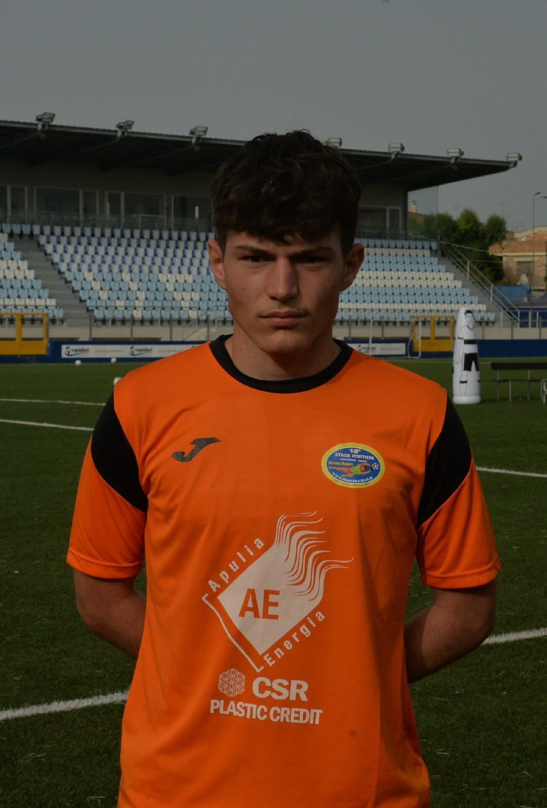

|

|
Salve a tutti, sono Gabriele Russillo, frequento l'I.I.S. EINSTEIN - DE LORENZO di Picerno.
Sono un ragazzo molto ambizioso e determinato nel raggiungere i miei obbiettivi.
Fin da piccolo ho avuta un'unica grande passione,ovvero il calcio,
il mio più grande sogno è quello di diventare un calciatore professionista.
Ho anche un'altra passione che si è maturata nel corso dei miei anni scolasti
all'I.I.S. EINSTEIN - DE LORENZO, cioè la
passione per la tecnologia.
|